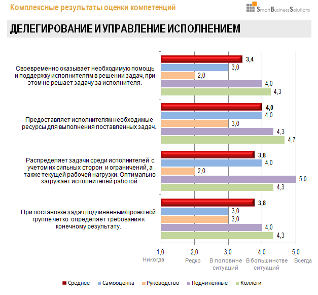

Оценка 360 градусов -
описание методики

360 градусов - это метод круговой оценки компетенций сотрудника, основанный на получении обратной связи от его коллег, руководства и подчиненных. В ряде случаев в оценке также участвует внешнее окружение (клиенты, подрядчики, бизнес-партнеры сотрудника).
Ключевая особенность оценки 360 градусов заключается в анализе субъективных мнений людей, которые взаимодействуют с сотрудником. Именно в этом состоит главное достоинство метода - он помогает понять, как другие люди внутри организации (и за ее пределами) воспринимают личные и профессиональные компетенции оцениваемого сотрудника, особенности его поведения и взаимодействия с окружающими.

Принцип круговой оценки методом 360 градусов
Результаты оценки 360 градусов позволяют сотруднику и руководству увидеть его сильные стороны и ограничения, а также помогают спланировать мероприятия по развитию компетенций и навыков.
Но как субъективные оценки других могут отражать реальную эффективность сотрудника? Не получим ли мы в результате эффект кривого зеркала? Давайте разберёмся.
Оценивать сотрудника в терминах «хорошо / плохо», «нравится / не нравится» или «я предполагаю» - грубая ошибка, которая сводит на нет эффективность метода 360 градусов.
Для достоверной оценки 360 требуются чёткие критерии, согласованная шкала, правильно составленные вопросы и грамотная организация процедуры диагностики. Однако, обо всём по порядку.
В каких случаях оценка 360 даст наилучший результат:
-
Определение сильных сторон и зон развития сотрудников;
-
Выявление перспективных сотрудников;
-
Формирование кадрового резерва (отбор кандидатов);
-
Выявление и профилактика скрытых конфликтов в коллективе;
-
Планирование программ развития персонала на основе реальных потребностей сотрудников и бизнеса.
Следование пошаговому алгоритму поможет получить точные и достоверные результаты оценки 360.
- Шаг 1. Определение критериев оценки;
- Шаг 2. Разработка анкеты 360 градусов;
- Шаг 3. Подготовка списка участников;
- Шаг 4. Согласование сроков оценки;
- Шаг 5. Внутренний PR опроса;
- Шаг 6. Проведение оценки 360;
- Шаг 7. Анализ результатов оценки;
- Шаг 8. Обратная связь.
Шаг 1. Определение критериев оценки
На данном этапе следует ответить на вопрос: «Что будем оценивать?». Правильно сформулированные критерии - основа качественной диагностики.
В оценке 360 градусов в качестве критериев выступают компетенции - профессионально-важные качества сотрудников, уровень развития которых напрямую влияет на их эффективность в работе. Можно использовать существующие в компании профили должностей для конкретных позиций, либо корпоративные модели компетенций, которые применимы для различных организационных уровней. Если действующей модели компетенций в организации пока нет, критерии можно сформировать на основе функциональных обязанностей оцениваемых сотрудников, учитывая ключевые требования и ожидания от их поведения (что должен делать/ как должен вести себя сотрудник, чтобы добиваться требуемых результатов в работе?).
Важно заранее определить, что будет объектом предстоящей оценки, какие деловые, управленческие или профессиональные качества будут измеряться. Например, для оценки руководителей можно выбрать следующие компетенции: принятие управленческих решений, планирование и организация работ, командное лидерство, эффективная коммуникация, саморазвитие и наставничество, управление изменениями.
Пример описания компетенций для оценки 360 градусов
Посмотрите другие примеры компетенций, которые могут быть использованы в оценке 360.
Шаг 2. Разработка анкеты 360 градусов
Определившись с критериями оценки, необходимо разработать анкету, с помощью которой будут оцениваться выбранные компетенции.
Вопросы анкеты формулируются в виде утверждений - поведенческих индикаторов, отражающих различные грани оцениваемых компетенций. В индикаторах не должно встречаться оценочных суждений (хорошо / плохо), двусмысленных формулировок, категоричных высказываний. Индикаторы должны быть чёткими, конкретными, лаконичными и понятными для участников. Обычно для оценки каждой компетенции используют 5-7 вопросов-индикаторов.
Примеры правильных и неправильных формулировок опросника 360 градусов
Хотите научиться разрабатывать правильные анкеты для оценки 360 градусов?
Воспользуйтесь нашим руководством >>
Для оценки степени соответствия поведения сотрудника индикаторам компетенций, используется уровневая (балльная) шкала. Мы рекомендуем использовать 6 уровней для оценки каждого вопроса-индикатора. Это позволит участникам опроса с максимальной точностью указать, насколько часто, по их мнению, оцениваемый сотрудник проявляет то или иное качество в своей работе.
Пример шкалы оценки для анкеты 360 градусов
эпизодически
ситуаций
ситуаций
эпизодически
ситуаций
ситуаций
Рекомендуем обязательно включить в шкалу оценки вариант «Не могу оценить».
Это поможет защитить результаты от искажений в случае, если у сотрудника окажется недостаточно данных для оценки какого-либо индикатора компетенции.
Шаг 3. Формирование списка участников оценки
Как правило, при проведении оценки 360 градусов опрашиваются 4 группы респондентов:
-
Сам оцениваемый сотрудник
-
Коллеги оцениваемого сотрудника
-
Руководитель сотрудника
-
Подчиненные сотрудника (при наличии)
Клиенты сотрудника (опционально)
Привлекать клиентов к участию в оценке целесообразно в двух случаях:
Во-первых, они должны иметь достаточный опыт взаимодействия с оцениваемым сотрудником.
Во-вторых, среди оцениваемых компетенций должны быть такие, которые клиенты могли наблюдать в ходе взаимодействия с сотрудником. Например, клиенты с высокой вероятностью смогут оценить «Навыки эффективной коммуникации», «Клиентоориентированность» или «Ответственность за результат». Однако вряд ли у них будет достаточно информации для оценки таких компетенций как «Управление подчиненными», «Саморазвитие и наставничество».
Участники оценки методом 360 градусов
Как рассчитать оптимальное количество оценщиков для опроса 360?
Принцип «чем больше - тем лучше» в данном случае не только не работает, но и вредит достоверности результатов оценки. Для того, чтобы получить максимально точные и репрезентативные результаты опроса 360, при выборе оценщиков рекомендуем придерживаться нескольких простых, но важных правил:
- Опыт совместной работы с оцениваемым сотрудником
- Частота рабочих контактов
- Умеренность нагрузки на 1 оценщика
Для получения достоверных оценок важно, чтобы стаж совместной работы участников оценки составлял не менее 6-ти месяцев. За это время у оценщика накопится достаточно реальных примеров поведения сотрудника для его объективной оценки.
Если сотрудники работают давно, но при этом редко контактируют по рабочим вопросам, у оценщика не будет достаточных данных для корректного заполнения опросника. Мы рекомендуем выбирать оценщиков, которые на регулярной основе взаимодействуют с оцениваемым сотрудником. Это относится в том числе к оценщикам, которые контактируют с сотрудником дистанционно (например, коллеги из филиалов).
Нередко возникают ситуации, когда руководителю предлагается заполнить 15-20 оценочных опросников на своих коллег и подчиненных. Учитывая, что среднее время заполнения одного опросника составляет 15 минут, оценщику трудно найти время для обстоятельной, взвешенной оценки каждого участника. В результате анкеты заполняются поверхностно, из-за чего страдает достоверность оценок и качество результата. Рекомендуется для одного оценщика назначать не более 10 оцениваемых сотрудников.
Важно помнить, что один и тот же сотрудник может быть одновременно оцениваемым и оценивающим (по отношению к другим сотрудникам). В этом случае он заполняет анкету самооценки, а также анкеты на тех сотрудников, которых должен оценить.
Шаг 4. Согласование сроков оценки 360 градусов
Исходя из нашего опыта, для проведения онлайн-опроса 360 градусов оптимально выделить 2 рабочие недели (10 дней). Для большинства участников этого достаточно, чтобы выделить время в своем рабочем графике на заполнение анкет.
При использовании бумажных анкет сроки могут быть увеличены из-за особенностей процесса выдачи и сбора опросников (при проведении бумажного опроса рекомендуется использовать конверты и опечатанные ящики-урны для сбора заполненных опросников).
Неправильное планирование сроков оценки снижает достоверность результатов
Полезный совет. При планировании сроков проведения оценки полезно учитывать график отпусков участников (не следует выбирать период, когда у большинства респондентов выпадает период отпуска), а также государственные праздники (желательно, чтобы сроки опроса не пересекались с праздничными днями).
Шаг 5. Внутренний PR опроса
Следует помнить, что для большинства взрослых людей оценка является стрессовой ситуацией (как для оценщиков, так и для оцениваемых сотрудников). Волнение и напряженность негативно влияют на открытость участников опроса и снижают достоверность результатов. Поэтому особое внимание необходимо уделить информационной подготовке предстоящей оценки.
Внутренний PR опроса - залог достоверных результатов оценки
Подготовительная разъяснительная работа проводится со всеми сотрудниками компании, принимающими участие в процедуре оценки 360 градусов.
Этот этап направлен на снятие тревоги и негативных ожиданий у персонала, формирование правильного понимания и позитивного отношения сотрудников к процедуре оценки. В результате этой работы сотрудники получают представление о целях оценки 360 градусов, её этапах, а также о том, какую пользу может получить в результате каждый из них.
Информирование участников важно организовать в формате диалога, не только сообщая сотрудникам информацию о предстоящей оценке, но предлагая поделиться своим мнением, а также возможными опасениями. Это продемонстрирует открытость организаторов оценки, их заинтересованность в мнении участников и готовность обсуждать волнующие вопросы.
Шаг 6. Проведение оценки 360 градусов
После завершения подготовительных работ, согласно утверждённому графику, проводится рассылка оценочных опросников (в бумажном или электронном виде).
Заполнение опросников осуществляется анонимно, что позволяет получить максимально открытую и достоверную обратную связь об уровне развития компетенций сотрудников. В процессе проведения оценки рекомендуем проводить периодический мониторинг активности участников (по количеству заполненных анкет).
В случае необходимости, необходимо сделать общее напоминание о сроках проведения оценки и важности заполнения опросников. Персональные напоминания «отстающим» участникам не рекомендуются, чтобы сохранить принцип анонимности и исключить давление на сотрудников.
Также важно организовать консультационную и техническую поддержку участников (в случае проведения онлайн-оценки), оперативно решая возникающие проблемы и компетентно отвечая на возникающие вопросы респондентов.
Техническая и консультационная поддержка облегчает прохождение опроса 360 градусов
Важно! Во время проведения оценки 360 градусов должна быть обеспечена полная конфиденциальность и защищенность получаемых данных. Как правило, доступ к первичным данным имеет всего несколько человек из числа экспертов, которые впоследствии занимаются обработкой анкет и подготовкой аналитических отчетов.
При проведении онлайн-опроса важно убедиться в том, что сбор и хранение данных осуществляется на российских серверах с соблюдением действующего законодательства.
Шаг 7. Анализ результатов оценки
Заполненные опросники обрабатываются и консолидируются с помощью специальных статистических программ. Отсеиваются заведомо недостоверные анкеты, в результате чего формируются профили оценок каждого сотрудника.
Для каждого оцениваемого сотрудника полученные оценки группируются по категориям респондентов: самооценка, оценка коллег, руководителей, подчиненных, клиентов. Это позволяет провести сравнительный анализ оценок разных категорий респондентов, выявить тенденции и закономерности, определить сильные компетенции и области, требующие развития.
По результатам обработки данных формируются индивидуальные аналитические отчеты по каждому оцениваемому сотруднику. С помощью визуальных диаграмм и комментариев экспертов, в отчёте в доступной и наглядной форме отражается актуальный уровень развития компетенций сотрудника. Чаще всего, в конце отчёта располагается раздел рекомендаций по использованию участником своих сильных компетенций и развитию слабых сторон.

Фрагмент персонального отчета участника оценки 360 градусов
Посмотрите пример готового отчёта 360 градусов, который мы составляем для участников по результатам оценки.
В некоторых случаях, помимо индивидуальных отчетов, мы также составляем общие рейтинговые отчёты в формате настраиваемых дашбордов, что позволяет анализировать результаты оценки на уровне подразделений и компании в целом.
Шаг 8. Обратная связь по результатам оценки 360 градусов
Обратная связь по результатам оценки 360 градусов проходит в форме индивидуальной встречи сотрудника с экспертом. В качестве экспертов могут выступать представители HR-департамента компании (владеющие навыками предоставления обратной связи), либо консультанты провайдера оценки.
Развивающая обратная связь по результатам оценки 360
В ходе обратной связи рекомендуем придерживаться следующего алгоритма:
-
Установление контакта с сотрудником
Первоочередная задача эксперта - создать атмосферу открытости и доверия с участником, которая будет способствовать конструктивному обсуждению результатов оценки.
-
Общая информация об оценке
Эксперт кратко и доступно рассказывает сотруднику о методе оценки 360 градусов, его основных особенностях и целях применения. Кроме этого эксперт разъясняет участнику суть оцениваемых компетенций, а также объясняет структуру шкалы оценок.
-
Обсуждение индивидуальных результатов оценки
Эксперт комментирует полученные участником оценки по компетенциям. Кроме этого, важно выяснить собственное мнение сотрудника относительно полученных оценок. Особое внимание следует уделить обсуждению следующих моментов:
а. компетенции и индикаторы, которые являются сильными, ресурсными сторонами сотрудника;
b. компетенции и индикаторы, которые являются наиболее актуальными зонами развития сотрудника;
c. индикаторы компетенций, оценки респондентов по которым наиболее сильно расходятся с самооценкой сотрудника.
-
Выбор приоритетов развития
После обсуждения результатов оценки, эксперт предлагает участнику выбрать 1-2 компетенции, над развитием которых он будет целенаправленно работать в ближайшей перспективе (1 год).
По итогам обратной связи эксперт помогает участнику сформулировать ключевые цели развития компетенций, а также подобрать соответствующие методы развития.
Важно помнить, что у результатов оценки 360 градусов есть свой «срок годности». С течением времени люди меняются, как и их компетенции, навыки и поведение. Поэтому информация и выводы, изложенные в отчётах участников, являются актуальными в течение 1 года с момента оценки. По истечении этого времени рекомендуется провести повторную оценку.
Автор материала: Беспалов Игорь Александрович ©
Проведение оценки 360 градусов требует знания методики и развитых организационных навыков. Желающим освоить данную технологию мы рекомендуем наше обучающее руководство, которую можно использовать как настольную книгу при проведении оценки 360. Подробное описание каждого шага, готовые шаблоны анкет, индикаторов компетенций, примеры отчетов и другая необходимая информация.
Воспользуйтесь нашими обучающими материалами, чтобы провести качественную оценку 360 градусов в вашей организации. Мы всегда рады помочь нашим клиентам и покупателям при возникновении вопросов. В течение 6 месяцев после приобретения наших материалов консультации предоставляются бесплатно.
Вы можете заказать разработку и проведение онлайн-оценки 360 градусов для сотрудников вашей компании или самостоятельно освоить технологию, используя обучающие материалы:
наверх
наверх ▲